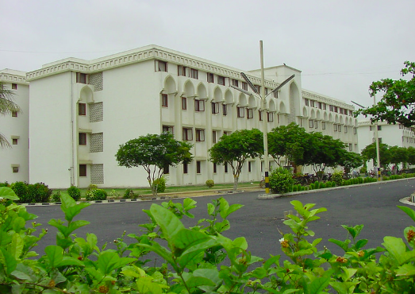

بسم اﷲ الرحمن الرحیم
نحمدہ و نصلّی علی رسولہ الکریم
جامعہ دارالعلوم کراچی، دینی درس گاہوں کے اس مقدس سلسلے کی ایک کڑی ہے جو اس برّصغیر میں اللہ کے کچھ نیک بندوں نے انگریزی استعمار کی تاریک رات میں دین کی شمعیں روشن رکھنے کے لئے قائم کیا تھا دارالعلوم دیوبند کے بانی حضرت مولانا محمد قاسم نانوتوی رحمۃاﷲ علیہ اور حضرت مولانا رشید احمدگنگوہی رحمۃ اللہ علیہ اور ان کے رفقاء انگریز کے خلاف ۱۸۵۷ء کے جہاد میں بنفس نفیس شریک تھے۔ لیکن انگریز کے سیاسی اقتدار کے مستحکم ہونے کے بعد انہوں نے محسوس کیا کہ اب محاذجنگ تبدیل ہوچکاہے، اب انگریز کی کوشش پوری منصوبہ بندی کے ساتھ یہ ہے کہ مسلمانوں کو سیاسی طور پر زیر کرنے کے بعدفکری طور پر بھی اپنا غلام بنایا جائے۔ جس کے لئے وہ ایک ایسا نظام رائج کررہاہے جو مسلمانوں کے دل پر مغربی افکار کا سِکہّ جمائے اس کے ساتھ ساتھ انگریز کی کوشش یہ ہے کہ اسلامی علوم کو سینے سے لگانے والوں پر معاش کے تمام دروازے بند کردیئے جائیں۔ اس لئے ان علماء کرام اور بزرگان دین نے رُوکھی سوکھی کھاکر، اور موٹاجھوٹا پہن کر دارالعلوم دیوبند کی بنیاد رکھی، اور ایسے سر فروش علماء کرام کی ایک بڑی جماعت تیار کردی جو دنیا کی چمک دمک سے منہ موڑ کر کچے مکانوں اور تنگ حجروں میں دینی علوم کے چراغ کو وقت کی آندھیوں سے بچاتے رہے، تاکہ اس سیاسی مغلوبیت کے دور میں مسلمان اپنی معاشرت، اخلاق، عبادت اور باہمی معاملات میں اسلامی احکام و اقدار کو چھوڑکر غیروں کے طریقوںکی تقلید نہ کرنے لگیں، اور پھر جب کبھی مسلمانوں کو سیاسی اقتدار واپس ملے تو انہیں سرورِ کونین، محسن انسانیت حضرت محمد رسول اللہ صلی اﷲ علیہ وسلم کا لایاہوا دین اپنی صحیح شکل و صورت میں محفوظ مل جائے۔ اس طرح حضرت شاہ ولی اللہ صاحب محدث دہلوی رحمۃ اللہ علیہ کا لگایا ہوا چمن جس پر خزاں نے ڈیرے جمالیے تھے، وہ دوبارہ سرسبز و شاداب ہونے لگا۔
دارالعلوم دیوبند سے علم و فضل، تبحر علمی، اتباعِ سنت اور زہد و تقویٰ کے جو آفتاب و ماہتاب نمودار ہوئے ان کے پاکیزہ کردار سے صحابہ و تابعین رضی اﷲ عنہم کی حسین یادیں تازہ ہوگئیں، اور ان کی تعلیم و تبلیغ کے فیض سے برصغیر کا ہرگوشہ سیراب ہوا۔ ان کی علمی تحقیقات اور تربیت اخلاق سے شریعت و طریقت کی وہ گتھیاں حل ہوئیں جو مسلمانوں کے دورِ انحطاط میں عرصے سے سربستہ راز بنی ہوئی تھیں۔ شیخ الہند حضرت مولانا محمودحسن صاحب قدس سرہ کی قیادت میں انہی علماء کرام کی مخلصانہ جدوجہدنے ہندوستان کو انگریز کی غلامی سے نجات دلانے میں ناقابل فراموش کردار ادا کیا۔
حکیم الامت، مجدد ملت حضرت مولانا اشرف علی صاحب تھانوی رحمۃ اللہ علیہ کے ایماء پر شیخ الاسلام علامہ شبیر احمد عثمانی صاحب رحمۃ اﷲ علیہ، شیخ الحدیث حضرت مولانا ظفر احمد عثمانی صاحب رحمۃ اﷲ علیہ اور مفتی اعظم پاکستان حضرت مولانا مفتی محمد شفیع صاحب رحمۃ اللہ علیہ نے قیامِ پاکستان کے لئے جو تاریخ ساز اور فیصلہ کن جدوجہد فرمائی وہ بھی اسی دارالعلوم دیوبند کا فیضان ہے۔
پاکستان بننے کے بعد جب حکومت مسلمانوں کو ملی، مناسب یہ تھا کہ سب سے پہلے ایک اسلامی حکومت کے شایان شان ایسا نظام تعلیم رائج کیا جاتاجس میں قرآن و سنت کی مکمل تعلیم کے ساتھ جدید علوم و فنون کو لادینی جراثیم سے پاک کرکے ان کی مکمل و معیاری تعلیم و تربیت ہوتی اور دینی و دنیوی تعلیم کی خلیج پاٹ دی جاتی، نہ یہاں دارالعلوم کی وہ حیثیت کافی تھی جو انگریز کے لادینی دور میں ہندوستان کے اندر مجبوراً رکھی گئی تھی اور نہ علی گڑھ کی محکومانہ تعلیم کی یہاں کوئی گنجائش تھی اور نہ ہی ندوہ کی وہ تعلیم کافی تھی جس میں اسلامی علوم میںسے صرف تاریخ و ادب کو اسلامیات کا محور بنالیا گیاتھا، ضرورت اس کی تھی کہ دینی اور دنیوی دونوں قسم کی مکمل معیاری تعلیم و تربیت پورے ملک میں عام کردی جاتی، مگرپاکستان اپنی ابتدا سے لے کر آج تک مختلف پارٹیوں اور گروہوں کی رسہ کشی کے جس طوفان سے گزرتا رہاہے وہ سب کے سامنے ہے، اس طویل عرصے میں یہاں کا نظام حکومت اور قانون بھی صحیح معنیٰ میں مسلمانوں کے دل کی آواز نہ بن سکا۔ جس کا نتیجہ یہ ہے کہ آج تک انگریز کی ڈالی ہوئی داغ بیل پر یہاں کے اسکولوں، کالجوں کی تعلیم جاری ہے، جو علوم وفنون کے ماہرین پیداکرنے کے بجائے صرف دفتری ملازمین پیداکررہی ہے۔ اور وہ بھی نہایت ناقص انداز میں، اور دینی تعلیم و تربیت کا وہاں یا تو گزر نہیں، یاہے تو محض برائے نام۔
اس کے علاوہ یہ ایک ناقابل انکار حقیقت ہے کہ علم، بالخصوص علمِ دین کے ساتھ جب تک اتباع سنت اور عظمت اسلاف کی روح نہ ہو، اور جب تک اس کے مطابق وضع قطع سے لے کر مزاج و انداز تک ہرچیز کی تربیت کا اہتمام نہ ہو، اُس وقت تک وہ علم خواہ تحقیق و ریسرچ کے جس بام کمال تک پہنچ جائے، اسلام کے نزدیک اس کی کوئی وقعت نہیں۔
انگریزی نظام تعلیم نے ایک صدی سے زائد کے عرصہ میں دل و دماغ اس درجہ مسموم کر دئے ہیں کہ اگر بالفرض عام تعلیمی اداروں میں علوم اسلامیہ کی تعلیم کا انتظام ہو بھی جائے تو اتباع سنت، عظمت اسلاف اور ٹھیٹھ دینی تربیت کا وہ انداز جو اسلامی مدارس میں متوارث چلا آتاہے، اور ان مدارس کی حقیقی روح ہے اس کے ان جدید تعلیمی اداروں میں مکمل طور پر منتقل ہونے کے لئے بہت طویل اور منظم جدوجہد کی ضرورت ہوگی جس میں کامیابی کے آثار مستقبل قریب میں نظر نہیں آتے اور جب تک عام تعلیمی ادارے اس ٹھیٹھ دینی مزاج و مذاق میں پوری طرح رنگ نہ جائیں، اس وقت تک ایک موہوم امید کے سہارے دینی تعلیم کو ملتوی نہیں کیاجاسکتا، اور جہاں ایسا کیا گیا ہے وہاں عوام کی دینی حالت کی ابتری کھلی آنکھوں سامنے ہے۔ اس لئے دین کی حفاظت کاجذبہ رکھنے والے علماء اور عوام نے پاکستان میں قدیم طرز کے اسلامی مدارس کا قیام اور ان کا جاری رہنا ضروری سمجھا۔
کراچی میں دارالعلوم کا قیام
ہجرت پاکستان کے بعد فقیہ الامت حضرت مولانا مفتی محمد شفیع صاحب رحمۃ اللہ علیہ نے دو کاموں کو اپنا مقصد زندگی بنالیا تھا۔ ایک پاکستان میں شریعت اسلامیہ کے نفاذ کے لئے جدوجہد، دوسرے کراچی میں یہاں کے شایان شان دارالعلوم کا قیام۔
ابتدائی دوسال تو قرارداد مقاصد اور اسلامی دستور کی جدوجہد (جو انتہائی بے سروسامانی کے ساتھ ہورہی تھی) میں اتنی مشغولیت رہی کہ دارالعلوم کے قیام میں کامیابی نہ ہوسکی۔
کراچی جو قیام پاکستان کے وقت پاکستان کا دارالحکومت ہونے کے علاوہ لاکھوں مسلمانوں کی عظیم آبادی کا شہر تھا، اس میں کوئی ایسا مرکزنہ تھا جو یہاں کی دینی ضروریات کی کفالت کرسکے، اس لئے شدید ضرورت تھی کہ یہاں کوئی ایسا مرکز قائم ہو۔ چنانچہ مفتی اعظم پاکستان مولانا مفتی محمد شفیع صاحب نوراللہ مرقدہ نے نہایت بے سروسامانی کے عالم میں محض توکلاًعلی اللہ، صرف دو اساتذہ اور چند طلباء سے محلہ نانک واڑہ میں ایک پرانے اسکول کی بلڈنگ میں ایک مدرسہ اسلامیہ قائم فرمادیا۔ جس کا نام دارالعلوم کراچی قرار پایا۔ یہ دارالعلوم شوال ۱۳۷۰ھ مطابق جون ۱۹۵۱ء میں قائم ہوا۔
دارالعلوم کے قیام کے بعد پاکستان کے تمام صوبوں اور اضلاع سے طلباء جمع ہوگئے مزید برآں، ہندوستان، برما، انڈونیشیا، ملائشیا، افغانستان، ایران، ترکی وغیرہ اسلامی ممالک سے طلباء کا رجوع ہوا، جس سے بحمداللہ دارالعلوم کراچی نے بہت قلیل عرصہ میں عالم اسلام میں دین کے مضبوط قلعہ کی حیثیت اختیار کرلی جو دیکھتے ہی دیکھتے طلباء ِعلوم نبوت اور داعیان دین کا مرکز بن گیا۔ اور بظاہر ایک بڑی عمارت بھی طلبہ کی کثرت سے آمد کے سبب تنگ محسوس ہونے لگی۔ اللہ تعالیٰ کے فضل و کرم اور حضرت مفتی صاحب قدس سرہ کی مسلسل دعائوں اور ان کے جذبۂ صادقہ کی بدولت کورنگی میں چھپن (۵۶) ایکڑ کا وسیع رقبۂ زمین مع ایک دو منزلہ عمارت اور پختہ کنویں اور ڈیزل انجن وغیرہ کے، جناب حاجی ابراہم دادابھائی مقیم جنوبی افریقہ نے لوجہ اللہ دارالعلوم کے لئے وقف فرمادیا۔ شکراللہ سعیہ و جزاہ فی الدارین خیر الجزاء
اس زمین پر جناب حاجی عبداللطیف صاحب باوانی مرحوم نے ایک لاکھ روپیہ خود اپنی ذات اور خاندان سے اور اٹھاون ہزار روپے اپنے حلقۂ احباب سے فراہم کرکے تعمیر پر خرچ کئے۔ اللہ تعالیٰ ان کو دارین کی جزائے خیر عطا فرمائے۔ چنانچہ ۱۵شعبان ۱۳۷۶ھ مطابق ۱۷ مارچ ۱۹۵۷ء کو دارالعلوم، کورنگی کی موجودہ عمارات میں منتقل ہوگیا اور نانک واڑہ میں حفظ ناظرہ اور تجوید و قرات کے شعبے باقی رہ گئے۔
جامعہ دارالعلوم کراچی، پاکستان میں علوم دینیہ کا عظیم مرکز ہے، یہی وہ دارالعلوم ہے جس نے ہزاروں علمائ، فضلا، محدث ،مفسر، فقیہ و ادیب، قاضی و مفتی، زہّاد واتقیاء، سرفروش مجاہدین اور مبلغین اسلام کی جماعتیں تیار کرکے ہر لمحہ دین کی حفاظت و اشاعت میں نمایاں حصہ لیا، یہ مرکزِ علم و حکمت اس مادی دنیا میں ایک روشن مینار ہے جس کی شعاعیں اکناف عالم میں پھیل رہی ہیں۔ والحمدﷲ علیٰ ذلک۔
محمد رفیع عثمانی
جامعہ دارالعلوم کراچی
یہ ادارہ ایک معتدل نصاب پیش کرتا ہے جو دینی اور عصری (دنیوی) دونوں مضامین پر مشتمل ہوتا ہے:
طلبہ کی تعداد تقریباً 10,000 جبکہ تعلیمی عملہ 210 اساتذہ پر مشتمل ہے ۔ اساتذہ میں مفتی تقی عثمانی، مفتی رفیع عثمانی، مفتی محمود اشرف عثمانی، مفتی عبدالرؤف سکھروی اور مفتی عمران اشرف عثمانی مدظلہ شامل ہیں
